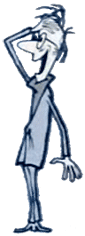

Empowering Students
to Write
Learn the skills necessary for effective communication.
I engage students in all aspects of the writing process:
- Analyzing the topic assignment.
- Brainstorming: Developing an approach and finding relevant evidence.
- Outlining ideas and developing a thesis.
- Drawing logical relationships between points and conclusions.
- Drafting: Paragraphing and transitions.
- Revising: Identifying vague language; achieving clarity and precision.
Most companies offering writing assistance either provide little more than superficial edits to an already completed document or offer to author a student's paper outright. Neither of these services empowers students with the essential tools for becoming accomplished independent writers.
While working as a tutor at the Reed College Writing Center, I learned how to help students navigate the writing process and develop self-editorial skills. Over the past 15 years I have used these techniques to enable students to transform their drafts into compelling and polished arguments.
Dan helped me define an outstanding plan for the paper and patiently guided me through the writing process.
more testimonialsPaul
San Francisco, CA
- Online Writing Support
- Academic Coaching
- College Admission Essay
- Resumes and CVs
- Persuasive Writing
- Creative Content
- Copyediting